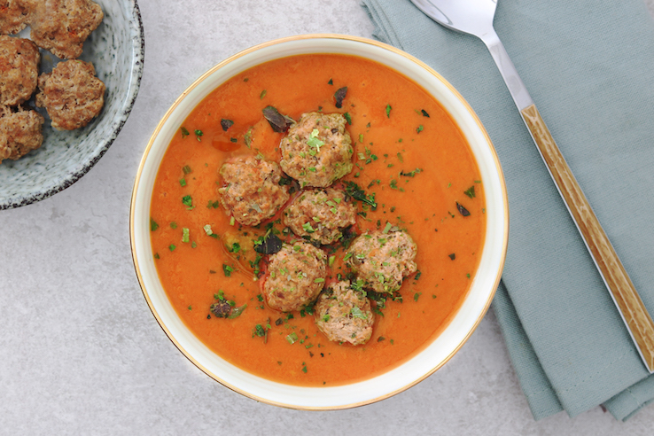

Soepballetjes

Ingredienten
- 1 ei
- 250 g rundergehakt
- 2 el paneermeel of 2 verkruimelde beschuiten
- 1 snuf paprikapoeder
- Peper, zout
Bereiding
- Splits het ei en klop de eidooier los. Het eiwit heb je niet nodig.
- Doe het gehakt in een ruime kom en trek het los met een vork. Voeg een flinke snuf zout, peper, het paneermeel en de paprikapoeder toe en kneed het er doorheen.
- Voeg daarna in gedeeltes de eidooier toe totdat het mengsel plakkerig genoeg is om er stevige balletjes van te draaien.
- Voeg de soepballetjes als laatst toe aan je pan met soep en laat ze zo'n 8 minuten meekoken..